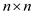
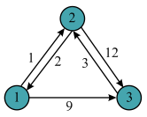
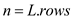
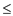

Consider the following figure given in the text book.
Running SLOW-ALL-PAIRS-SHORTEST-PATH algorithm:
• The total number of rows in the weight matrix W of the given graph, .
• Prepare the initial matrix by assigning the W to. Thus, the initial matrix will be as follows:
• For loop in the SLOW-ALL-PAIRS-SHORTEST-PATH calculates the sequence of matrices ().
• EXTENDED-SHORTEST-PATH algorithm is used to find.
Now, run the SLOW-ALL-PAIRS-SHORTEST-PATH algorithm on the given graph. Then, the sequence of matrices that computed by the SLOW-ALL-PAIRS-SHORTEST-PATH algorithm in each iteration are as follows
Step1:
Step2:
Step 3:
Step 4:
Step 5:

The above matrix is the final matrix computed by the SLOW-ALL-PAIRS-SHORTEST-PATHS (). contains the shortest-path weights.
• The total number of rows in the weight matrix W of the given graph, .
• Prepare the initial matrix by assigning the W to. Thus, the initial matrix will be as follows:
• Initialize the value of m by 1.
• While loop in the FASTER-ALL-PAIRS-SHORTEST-PATH algorithm computes the sequence of matrices ().
• EXTENDED-SHORTEST-PATH algorithm is used calculate the matrix.
Now, run the FASTER-ALL-PAIRS-SHORTEST-PATH algorithm on the given graph. Then, the sequence of matrices that computed by the FASTER-ALL-PAIRS-SHORTEST-PATH algorithm in each iteration are as follows:
Step 1:
Step 2:
Associability of matrix multiplication defined by EXTEND-SHORTEST-PATHS
A matrix multiplication is associative, that is, if A, B and C are two matrices, then. Consider C be the product of two  matrices A and B. Then each element in C can be represented as
In matrix multiplication using EXTEND-SHORTEST-PATHS, use the same representation of matrix multiplication and replacing variables in EXTEND-SHORTEST-PATHS and obtaining the algorithm shown below:Algorithm for Matrix Multiplication:
Input Parameters: A, B
Output Parameter: C
MATRIX- MULTIPLICATION (A,B)
// assign the value of rows into a variable n
n=A.rows
Assume C be an matrix
// iterate the loop for rows of first matrix from initial position to final position
for i=1 to n
// iterate the loop for rows of second matrix from initial position to final position
for j=1 to n
// initialize all the elements of the resultant matrix with 0
cij=0
// iterate the loop for storing the element after performing multiplication
for k=1 to n
// Multiply the element of matrix a and b and add it with the
// element of matrix c and after that assign the result in c matrix
cij=cij+aik bkj
bkj
return C
Algorithm to prove associativity of matrix multiplication which is defined by EXTEND-SHORTEST-PATHS:
Now considerbe the product of three matrices A, B and C
n=A.rows
let D be an matrix
// iterate the loop for rows of first matrix from initial position to final position
for i=1 to n
// iterate the loop for rows of second matrix from initial position to final position
for j=1 ton
// initialize all the elements of the resultant matrix with 0
dij=0
// iterate the loop for storing the element after performing multiplication
for k=1 to n
// Multiply the element of matrix a and b and add it with the
// element of matrixd and after that assign the result in d matrix
dij=dij+aikbkj
return D
m=D.rows
let E be an  matrix
matrix
// iterate the loop for rows of first matrix from initial position to final position
for i=1 to m
// iterate the loop for rows of second matrix from initial position to final position
for j=1 to m
// initialize all the elements of the resultant matrix with 0
eij=0
// iterate the loop for storing the element after performing multiplication
for k=1 to m
// Multiply the element of matrix a and b and add it with the
// element of matrixe and after that assign the result in e matrix
eij=eij+dikckj
return E
Same way, can be represented as shown below:
n=B.rows
let D be an matrix
// iterate the loop for rows of first matrix from initial position to final position
for i=1 to n
// iterate the loop for rows of second matrix from initial position to final position
for j=1 to n
// initialize all the elements of the resultant matrix with 0
dij=0
// iterate the loop for storing the element after performing multiplication
for k=1 to n
// Multiply the element of matrix a and b and add it with the
// element of matrixd and after that assign the result in d matrix
dij=dij+bikckj
return D
m=A.rows
let E be an matrix
// iterate the loop for rows of first matrix from initial position to final position
for i=1 to m
// iterate the loop for rows of second matrix from initial position to final position
for j=1 to m
// initialize all the elements of the resultant matrix with 0
eij=0
// iterate the loop for storing the element after performing multiplication
for k=1 to m
// Multiply the element of matrix a and b and add it with the
// element of matrixe and after that assign the result in e matrix
eij=eij+aikdkj
return E
Illustration of associativity of matrix multiplication using mathematics:
By using mathematics, it can be proved as shown:
Now, considerbe the product of three matrices A, B and C.
Here, S can be represented as,
Where, =
Here, is the product of two matrices A and B.
By using mathematics, it can be proved as shown:
Same way can be represented as shown below:
Where,  =
=
Here, is the
product of two matrices A and B.
Thus,
Hence, matrix multiplication defined by EXTEND-SHORTEST-PATHS is associative.
Example to illustrate associativity of matrix multiplication defined by EXTEND-SHORTEST-PATHS:
Consider the graph of matrix A and calculate the shortest path of the graph as shown below:

The final matrix is. Now, consider as matrix A. Colored entries in the matrix shows the shortest distance by using intermediate vertex.
Consider the graph of matrix B and calculate the shortest path of the graph as shown below:
The final matrix is. Now, consider as matrix B.
Consider the graph of matrix C and calculate the shortest path of the graph as shown below:
The final matrix is. Now consider as matrix C.
Multiplication of three matrices: Multiplication of three matrices A, B and C are as follows:
Here, it can be seen that and are equal.
Hence, it is proved that matrix multiplication in associative.
The all-pairs shortest paths algorithm computes.

Where and is the identity matrix. It means the that the entry in the ath row and bth column of the matrix. Here, “PRODUCT” of the distance from vertex a to vertex b to the row I is the solution of the of the single source shortest path.
Now the multiplication of the matrix is calculated by the product of ath row of first matrix to the bth column of the second matrix and get the solution matrix row a.
In the solution matrix, to get the single-source shortest-paths
from vertex I is the difference between the first row to the
current position and for rest of the entries it will be  .
.
Bellman-Ford Algorithm is the algorithm that calculates the shortest path from initial node to the final node. In this algorithm, first row is same calculated as above calculated “MULTIPLICATIONS”.
The vector for the solution matrix is initially 0 same like
Bellman-Ford Algorithm and for other
vertices. Here, the distance between the vertices is updated in the
solution matrix to a smaller estimate. It is formed by adding some
to
the current estimate of the distance to u.
The multiplication is done times.
For every vertex  which are
the source, compute the trees for which are
of shortest paths.
which are
the source, compute the trees for which are
of shortest paths.
To implement the above, for each, compute the predecessor.
For the fixed value of i and j, the value of k is this such that the following:
Since, there are n number of vertices whose trees needs the computation.
The n number of vertices for each of the tree whose predecessor needs the computation, takes the following time for each of the one:
Thus, the total time taken is .
SHORTEST PATH
The predecessor matrix of shortest path is a matrix which can be computed as follows,
is NILL if or there is no path from
AND
Otherwise is the predecessor of j on some shortest path from i.
EXTENDED-SHORTEST-PATH algorithm accepts a weight Matrix W and initial matrix and returns.
Where, be the minimum weight of any path from vertex i to vertex j and it contains at most m edges.
Now, can be computed using EXTENDED-SHORTEST-PATH as follows:
So to compute predecessor, the extended shortest path algorithm is given below:
PREDECESSOR-EXTENDED-SHORTEST-PATH (L, W)
// Assign the value of rows for matrix l into the variable n
n = l.rows
Suppose L’ = (l’ij) be a new matrix
Suppose be a new matrix
// iterate for loop for the rows of the first matrix
for i = 1 to n
// iterate for loop for the rows of the second matrix
for j = 1 to n
// firstly assign all the element of the matrix with infinity
// Assign all the elements of the matrix with null
// iterate for loop for resultant matrix
for k = 1 to n
// Calculate shortest path by applying the following formula
return L’
Above algorithm is written without superscripts to make its input and output matrices independent of m.Value of can be computed by above algorithm for the graph which is as shown below:
Since
SLOW-ALL-PAIR-SHORTEST-PATH is internally using
EXTENDED-SHORTEST-PATH, the procedure which is discussed in
the above part can be extended to t.
In the above matrix, if there is any edge from vertex i to j, then path will also exist between them and assign value of weight in (i, j)th position in the matrix.
Here k = 0, which implies that there is no intermediate vertex from vertex i to j.
Calculate the predecessor matrix p after the calculation of L(k). Calculate the matrix p asp(1), p(2), …… p(n) till the matrix p(n) is not equal to the matrix p(n-1).
Formulate the pij(k)for k = 0, which means that there is no intermediate vertex between the vertex i to vertex j.
Now for k = 1, vertex “1” can be an intermediate node. Compute L(1)for finding the shortest path from all the vertices with intermediate vertices 1. Then, the corresponding L(1) matrix will be as shown:
Formulate pij(1)for k = 1, which means that there is one intermediate vertex which is “1” between the vertex i to vertex j.Compute p(1) for finding the shortest path from all the vertices with intermediate vertices 1. Then the corresponding matrix p(1) will be as shown:
Now for k = 2, so, vertex “2” can be an intermediate node. Compute L(2) for finding the shortest path from all the vertices with intermediate vertices 2. Then, the corresponding L(2) matrix will be as shown:
Formulate the pij(2)for k = 2, which means there is two intermediate vertex which is “2” between the vertex i to vertex j. Compute p(2) for finding the shortest path from all the vertices with intermediate vertices 2. Then the corresponding matrix p(2) will be as shown:
Now for k = 3, vertex “3” can be an intermediate node. Compute L(3)for finding the shortest path from all the vertices with intermediate vertices 3. Then the corresponding L(3)matrixwill be as shown:
Formulate the pij(3)for k = 3, which means there is one intermediate vertex which is “3” between the vertex i to vertex j. Compute p(3) for finding the shortest path from all the vertices with intermediate vertices 3. Then the corresponding matrix p(3)will be as shown:
Now for k=4, vertex “4” can be an intermediate node. Compute L(4)for finding the shortest path from all the vertices with intermediate vertices 4.
Then the corresponding L(4)matrix will be as shown:
Formulate the pij(4) for k = 4, which means there is one intermediate vertex which is “4” between the vertex i to vertex j. Compute p(4) for finding the shortest path from all the vertices with intermediate vertices 4. Then, the corresponding matrix p(4) will be as shown:
Now for k = 5, vertex “5” can be an intermediate node. Compute L(5)for finding the shortest path from all the vertices with intermediate vertices 5. Then the corresponding L(5) matrix will be as shown:
Formulate the pij(5 for k = 5, which means there is one intermediate vertex which is “5” between the vertex i to vertex j.
Compute p(5) for finding the shortest path from all the vertices with intermediate vertices 5. Then, the corresponding matrix p(5) will be as shown:
FASTER-ALL-PAIRS-SHORTEST-PATHS
The FASTER-ALL-PAIRS-SHORTEST-PATHS algorithm, in the each iteration of the while loop, calls EXTEND-SHORTEST-PATHS (L(m),L(m)) and stores the resultant matrix returned by the EXTEND-SHORTEST-PATHS procedure.
• In each iteration, to store the resultant matrix returned by the EXTEND-SHORTEST-PATHS procedure, The FASTER-ALL-PAIRS-SHORTEST-PATHS algorithm creates a space for the new matrix (L(2m)) of size .
• Since the while loop runs times, the algorithm required to store space for new matrices.
• Since each matrix contains  elements,
the total space required to store the matrices
is.
elements,
the total space required to store the matrices
is.
But the algorithm can be modified, such that the algorithm takes
only space.
space.
Modifying the FASTER-ALL-PAIRS-SHORTEST-PATHS algorithm such
that the algorithm takes only
space:
• Instead of creating a new matrix inside the while loop in each iteration, create only one matrix (L (2m)) of size outside the while loop.
• Now override the previously calculated matrices by newly calculated matrices.
• Due to the above modification, the algorithm only requires to create space for only two matrices, L (1) and L (2m) of size.
• Hence, the space required is and the
space complexity will be.
The modified FASTER-ALL-PAIRS-SHORTEST-PATHS procedure will be as follows:
FASTER-ALL-PAIRS-SHORTEST-PATHS
1
2
3
4 let be a matrix
5 while
6 EXTEND-SHORTEST-PATHS
7 
8 return
Hence, the space complexity of above modified
FASTER-ALL-PAIRS-SHORTEST-PATHS algorithm is
.
Modification of FASTER-ALL-PAIRS-SHORTEST-PATHS
Shortest path:
Shortest path for a weighted directed graph is the shortest weight from going through source vertex to the destination vertex by traversing all the vertices of the graph. Shortest path does not contain cycle and it is not necessary for a shortest path to satisfy the property of triangle inequality. Cost of the shortest path is computed by summing the cost of the edges which are coming in the way from going from one vertex to another.
All pair shortest path:
All pair shortest path algorithm is used to find the shortest for a Graph G = (V, E). Suppose a path p is the shortest path from going through vertex i to vertex j and it is include minimum one edge and maximum m edges. Edges are finite, if and only if graph does not contain negative weight cycle.
If the source and destination vertex are same then path p contain no edges. If source and destination vertex are different then find the path p from vertex i to vertex j by going through intermediate vertices k. The path from source vertex to intermediate vertex is represented by p’.
Computation of shortest path from vertex i to vertex j is easy if .
Negative Weight cycles:
A negative cycle is a cycle in a weighted graph whose total weight is negative.
Consider the graph shown below.
This graph contains negative cycle. Calculate shortest path from a to d in above graph then it will provides a shortest path , which is
not true. In extended shortest path, which is used in fast shortest
path algorithm, if the diagonal of L matrix are computed
then it contains negative value then definitively there will be a
negative cycle in the graph. So, in extended shortest by
checking for all
whose , help in
determining whether the graph contain negative cycle or not.
, which is
not true. In extended shortest path, which is used in fast shortest
path algorithm, if the diagonal of L matrix are computed
then it contains negative value then definitively there will be a
negative cycle in the graph. So, in extended shortest by
checking for all
whose , help in
determining whether the graph contain negative cycle or not.Faster all pair shortest path:
In Faster all pair shortest path, for a graph G = (V, E) includes a cycle of negative weight but the condition is that and the value m>n–1.
The algorithm given below finds the negative cycles in the graph W. This uses the algorithm EXTEND-SHORTEST-PATHS to get the matrix that holds the shortest paths for the concerned graph.
EXTEND_SHORTEST_PATHS is defined in the section 25.1 of the book.
Modify Extend-Shortest-Paths Algorithm:
EXTEND-SHORTEST-PATHS (L, W)
//get the number of rows in the matrix representing graph

Assume is a square matrix
//go through the matrix elements
for i=1 to n
//go through the matrix elements
for j=1 to n
// Initialize all the matrix element with 
// Iterate for loop for the result in the matrix
for k=1 to n
return L’
If there is a negative weight cycle in a Graph G, then create a lower value by going through the cycle continuously and thus the condition is that
Modified-faster-all pair shortest-path algorithm
MODIFIED-FASTER-ALL PAIR SHORTST-PATH (W)
//get the number of rows in the matrix representing graph
//store the matrix locally for calculation
//run a loop through the matrix rows to get the paths
while 
//store the current path and consider the section 25.1 from the textbook
Let
//go through the matrix elements
for i = 1 to n
for j = 1 to n
if
retu rn negative cycle detected
return
The determination of negative weight cycle in the matrix L(n-1)can be made by seeing at the diagonal, which is calculated from all-pairs shortest path algorithm. Negative weight cycle is present in the graph, if the diagonal of the matrix contains negative weight numbers.
If negative weight cycle is present in the graph, then there exists a path (weight negative) of length k = n for diagonal vertex.
Thus, in the matrix multiplication, negative value is found at the diagonal matrix Wm is produced for all m = k. Due to this reason modification in the algorithm is made by replacing Wn-1with Wn.
An efficient algorithm to find the length (number of edges) of a minimum length negative-weight cycle in a graph is as follows:
FIND-MIN-LENGTH-NEG-WEIGHT-CYCLE (W)
1. n = w.rows
2. L(1) = W
3. m = 1
4. while mn and no diagonal entries of L(m) are negative
5. L(2m) = EXTEND-SHORTEST-PATHS(L(m), L(m))
6. m = 2m
7. if m > n no diagonal entries of L(m) are negative
8. then return “no negative-weight cycles”
9. elseif m 2
10. then return m
11. else
12. low = m/2
13. high = m
14. d = m/4
15. while d1
16. s= low + d
17. L(s)=EXTEND-SHORTEST-PATHS(L(low),L(d))
18. if L(s) has any negative entries on the
diagonal then
19. high = s
20. else
21. low=s
22. d = d/2
23. return high
For some values of m and i,, the cycles of the negative weight occur.
Every time the new value of W is computed and at each time it is being checked that whether this is happened or not.
And at which point the length of the cycle be m.
The runtime would be.